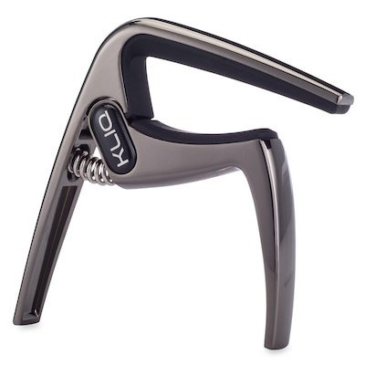
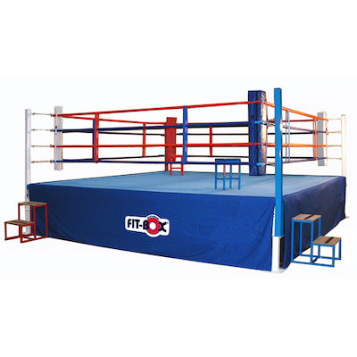
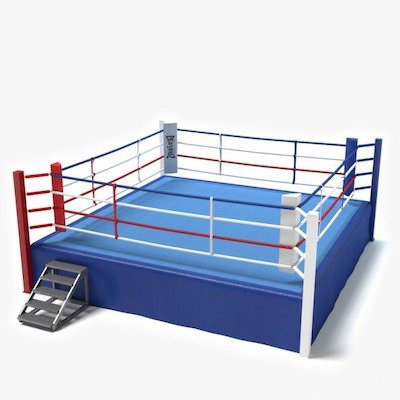

<!DOCTYPE html>
<html>
  <!--
  Task: Perceptual-baseline control task in cMST
  Author: Gavin Stark
  Forked from main cMST-Online on 11/20/19 and modified for mobile / Cordova
  Forked again on 8/20/20, pulled out Cordova, and setup for JATOS

Revised: November 20, 2019 (CELS) for Cordova
   11/22/19 (CELS) - cleanup parameter section
   11/25 (CELS): Button size increase
   12/4/19 (CELS): Using .replace not .href and will take you back to index.html if the end
   12/5/19 (CELS): Styles to alter text/button sizes, ensuring deviceready, meta-tag
   12/6/19 (CELS): Shifted data saving to savedata.js and setup to allow local backup save on iOS
   4/13/20 (CELS): Goes to end.html if this is the last phase
   4/16/20 (CELS): Will detect if on SONA and go back there for credit
   8/20/20 (CELS): Forked off and reworked for JATOS
   8/24/20 (CELS): Fixed jumping stimuli when using button response mode
   5/31/22 (CELS): Added bit about blank screen in main task
   10/21/22 (CELS): Updated default to buttons 
   2/28/23 (CELS): Updated to jsPsych7
   8/16/23 (CELS): Fixed for versions without setup.html to progress to next phase
   8/30/23 (CELS): Added getID() to come up with a good sid 
   10/23/23 (CELS): Multi-lang support using Honeycomb style language file
  
 Optional parameters:
  [sid=##]: Subject ID -- used for data file name (default=1234)
  [resp=X]: Response mode -- set to 'keyboard' to use keys, anything else to use buttons (default=button)
  [rand=#]: Should which stimuli are shown as repeats vs. lures be randomized? (default=0)
  [q_pcon=pagename]: Base of HTML filename to add into the queue after this task (default=null)

 -->

<head>
  <meta http-equiv="Content-Security-Policy" content="default-src 'self' data: gap:  'unsafe-inline' 'unsafe-eval' 
    https://fonts.gstatic.com http://www.stark-labs.com/exp/jsPsych/mobile_cMST/append_log.php http://www.stark-labs.com/exp/jsPsych/mobile_cMST/write_data_file.php; 
    style-src 'self' 'unsafe-inline' https://fonts.googleapis.com/css; media-src *; 
    img-src 'self' data: content:;">

  <script type="text/javascript" src="jatos.js"></script>
  <script type="text/javascript" src="js/index.js"></script>
  <script src="js/jquery-3.1.1.min.js"></script>
  <script src="js/jspsych_731/dist/jspsych.js"></script>
  <script src="js/jspsych_731/dist/plugin-html-keyboard-response.js"></script>
  <script src="js/jspsych_731/dist/plugin-html-button-response.js"></script>
  <script src="js/jspsych_731/dist/plugin-categorize-image.js"></script>
  <script src="js/plugin-categorize-image-buttons.js"></script>
  <link rel="stylesheet" href="css/jspsych.css"></link>
  <style>
    .jspsych-display-element {
      font-size: 200%;
    }
    .jspsych-btn {
      font-size: 150%;
    }
  </style>
</head>
<script>


function waitFor(conditionFunction) {
  const poll = resolve => {
  if(conditionFunction()) resolve();
    else setTimeout(_ => poll(resolve), 400);
  }
  return new Promise(poll)
}

function getID() {
  // Try to get a reasonable ID code for this person.  You can use the URL with a "sid" parameter or
  // specify one in the jatos studySessionData. If not, it'll use the JATOS workerId.
  // URL > studySession > workerID
  var sid=jatos.urlQueryParameters.sid;
  if (sid == undefined) {
    sid=jatos.studySessionData['sid'];
  }
  if (typeof sid == 'undefined') {
    if (typeof jatos.workerId !== 'undefined') { // At least try the workerID
      sid = jatos.workerId;
    }
    else { sid=1234; }
  }
  return sid
}

jatos.onLoad(async function() {
  const phasename='cmst_instr_contOSN';
  var sid=getID();
  var resp_mode='button';
  if (jatos.studySessionData['resp_mode'] == 'keyboard') {
    resp_mode='key';
  }
  else if (jatos.studySessionData['resp_mode'] == 'key') {
    resp_mode='key';
  }

  var lang='en';
  if (typeof jatos.studySessionData['lang'] !== 'undefined') {
    lang=jatos.studySessionData['lang'];
  }
  if (jatos.studyJsonInput && typeof jatos.studyJsonInput['lang'] !== 'undefined' ) { 
    lang=jatos.studyJsonInput['lang']
  }
  if (jatos.batchJsonInput && typeof jatos.batchJsonInput['lang'] !== 'undefined' ) { 
    lang=jatos.batchJsonInput['lang']
  }

  // load honeycomb version of lang file
  console.log('loading json lang: ',lang)
  var langfile='lang/omst_'+lang+'.json';
  var json_prompts=null;
  $.getJSON(langfile,function( data ) {
    json_prompts=data;
    console.debug(langfile + ' loaded...ish');
  });
  await waitFor(_ => json_prompts !== null);
  console.log(json_prompts['task']['name'])
  let prompts=json_prompts['instructions']; // Load in this phase's section

  var jsPsych = initJsPsych({on_finish: function() {
      if (0) { jsPsych.data.displayData(); }
      else {
        var order=jatos.studySessionData["order"];
        jatos.studySessionData["taskindex"] += 1;
        if (typeof order === 'undefined') {
          // We don't have an 'order' setup, so assume it's 1-N
          console.log('faking an order')
          order=Array(jatos.componentList.length).fill().map((e,i)=>i+1);
          jatos.studySessionData["taskindex"]=jatos.componentPos;
          //console.log(order);
          //console.log(jatos.studySessionData["taskindex"]);
        }
        var expdata = jsPsych.data.get().json();
        // Submit results to JATOS and queue the end or next task
        if (typeof order === 'undefined' || order.length == jatos.studySessionData["taskindex"]) { 
          // we're done
          // Check if this came from SONA - should have URL.sid and .sona
          if (typeof jatos.urlQueryParameters.sid === 'undefined' || typeof jatos.urlQueryParameters.sona === 'undefined' ||
              typeof jatos.studyJsonInput['experiment_id'] === 'undefined' || typeof jatos.studyJsonInput['credit_token'] === 'undefined') {
            jatos.submitResultData(expdata,jatos.endStudy);
          }
          else {
            var redirect='https://uci.sona-systems.com/webstudy_credit.aspx?experiment_id='+jatos.studyJsonInput['experiment_id']+
              '&credit_token='+jatos.studyJsonInput['credit_token']+'&survey_code='+jatos.urlQueryParameters.sid;
            jatos.endStudyAndRedirect(redirect,expdata);
          }
        }
        else {
          // submit and start the next
          jatos.submitResultData(expdata, () => { jatos.startComponentByPos(order[jatos.studySessionData["taskindex"]]) });
        }
      }
    }
  });
  
  jsPsych.data.addProperties({
    task: phasename,
    subject: sid,
  });
  //var trial_choices= prompts['k_trial_choices'];  // DELETE THIS

  // Default is keyboard here - override if buttons
  //var instr_choice=[' ']; // 32 is space
  //var instr_txt='<i>spacebar</i>'; //
  //var trial_type='';
  //var trial_txt=prompts['k_trial_text']; //
  //var trial_choices=['v','b','n']; //
  var extra_html='';
  if (resp_mode == 'button') {
    //instr_choice=['OK']; //
    //instr_txt='<i>OK</i>'; //
    //trial_type='-buttons';
    //trial_txt='<i>Old</i>, <i>Similar</i>, or <i>New</i>'; //
    //trial_choices=['Old','Similar','New']; //
    extra_html='style="margin-top:112px;"';
    extra_html='';
  }

  //console.log(prompts['k_trial_choices'][0], prompts['k_trial_choices'][1], prompts['k_trial_choices'][2])
  var intro = {
    type: (resp_mode == 'button' ? jsPsychHtmlButtonResponse : jsPsychHtmlKeyboardResponse),
    choices: [prompts[resp_mode]['instr_choice']],
    prompt: "<p>" +prompts[resp_mode]['prompt0'] + "</p>",
    stimulus: prompts['txt0'],
  }
  var new1 = {
    type: (resp_mode == 'button' ? jsPsychCategorizeImageButtons : jsPsychCategorizeImage), 
    stimulus: 'img/foil_1032.jpg',
    key_answer: prompts['key']['trial_choices']['new'] , button_answer: 2,
    choices: [prompts[resp_mode]['trial_choices']['old'], prompts[resp_mode]['trial_choices']['sim'], prompts[resp_mode]['trial_choices']['new'],],
    prompt: "<p>" + prompts[resp_mode]['prompt_new'] + "</p>",
    force_correct_button_press: true,
    incorrect_text: "<p>" + prompts[resp_mode]['inc_new'] + "</p>",
    correct_text: "<p " + extra_html+ ">" + prompts['cor_new'] + "</p>"
  }
  var new2 = {
    type: (resp_mode == 'button' ? jsPsychCategorizeImageButtons : jsPsychCategorizeImage),
    stimulus: 'img/foil_1033.jpg',
    key_answer: prompts['key']['trial_choices']['new'] , button_answer: 2,
    choices: [prompts[resp_mode]['trial_choices']['old'], prompts[resp_mode]['trial_choices']['sim'], prompts[resp_mode]['trial_choices']['new'],],
    prompt: "<p>" + prompts[resp_mode]['prompt_new'] + "</p>",
    force_correct_button_press: true,
    incorrect_text: "<p>" +prompts[resp_mode]['inc_new'] + "</p>",
    correct_text: "<p " + extra_html+ ">" + prompts['cor_new'] + "</p>",
      
  }
  var new3 = {
    type:  (resp_mode == 'button' ? jsPsychCategorizeImageButtons : jsPsychCategorizeImage),
    stimulus: 'img/pcon026a.jpg',
    key_answer: prompts['key']['trial_choices']['new'], button_answer: 2,
    choices: [prompts[resp_mode]['trial_choices']['old'], prompts[resp_mode]['trial_choices']['sim'], prompts[resp_mode]['trial_choices']['new'],],
    prompt: "<p>" + prompts[resp_mode]['prompt_new'] + "</p>",
    force_correct_button_press: true,
    incorrect_text: "<p>" + prompts[resp_mode]['inc_new'] + "</p>",
    correct_text: "<p " + extra_html+ ">" + prompts['cor_new'] + "</p>",
      
  }
  var repeat1 = {
    type:  (resp_mode == 'button' ? jsPsychCategorizeImageButtons : jsPsychCategorizeImage),
    stimulus: "img/foil_1033.jpg",
    key_answer: prompts['key']['trial_choices']['old'] , button_answer: 0,
    choices: [prompts[resp_mode]['trial_choices']['old'], prompts[resp_mode]['trial_choices']['sim'], prompts[resp_mode]['trial_choices']['new'],],
    prompt: "<p>" + prompts[resp_mode]['prompt_rep'] + "</p>",
    force_correct_button_press: true,
    incorrect_text: "<p>" + prompts[resp_mode]['inc_rep'] + "</p>",
    correct_text: "<p " + extra_html+ ">" + prompts['cor_rep'] + "</p>",
  }
  var lure1 ={
    type:  (resp_mode == 'button' ? jsPsychCategorizeImageButtons : jsPsychCategorizeImage),
    stimulus: "img/pcon026b.jpg",
    key_answer: prompts['key']['trial_choices']['sim'] , button_answer: 1,
    choices: [prompts[resp_mode]['trial_choices']['old'], prompts[resp_mode]['trial_choices']['sim'], prompts[resp_mode]['trial_choices']['new'],],
    prompt:"<p>" + prompts[resp_mode]['prompt_lure'] + "</p>",
    force_correct_button_press: true,
    incorrect_text: "<p>" + prompts[resp_mode]['inc_lure'] + "</p>",
    correct_text: "<p " + extra_html+ ">" + prompts['cor_lure'] + "</p>",
  }

  var side_by_side1 = {
    type: (resp_mode == 'button' ? jsPsychHtmlButtonResponse : jsPsychHtmlKeyboardResponse),
    stimulus: '<p>' + prompts['side_by_side'] + '</p><table style="width:100%"><tr><td><td></table> ',
    choices: [prompts[resp_mode]['instr_choice']],
  }
  var new4 = {
    type:  (resp_mode == 'button' ? jsPsychCategorizeImageButtons : jsPsychCategorizeImage),
    stimulus: "img/foil_1035.jpg",
    key_answer: prompts['key']['trial_choices']['new'] , button_answer: 2,
    choices: [prompts[resp_mode]['trial_choices']['old'], prompts[resp_mode]['trial_choices']['sim'], prompts[resp_mode]['trial_choices']['new'],],
    prompt: '<p>' + prompts['prompt_test'] + ' ' + prompts[resp_mode]['trial_txt'] +'</p>',
    force_correct_button_press: true,
    incorrect_text: "<p>" + prompts[resp_mode]['inc_new'] + "</p>",
    correct_text: "<p " + extra_html+ ">" + prompts['cor_new'] + "</p>",
  }
  var new5 = {
    type:  (resp_mode == 'button' ? jsPsychCategorizeImageButtons : jsPsychCategorizeImage),
    stimulus: 'img/pcon028a.jpg',
    key_answer: prompts['key']['trial_choices']['new'] , button_answer: 2,
    choices: [prompts[resp_mode]['trial_choices']['old'], prompts[resp_mode]['trial_choices']['sim'], prompts[resp_mode]['trial_choices']['new'],],
    prompt: '<p>' + prompts['prompt_test'] + ' ' + prompts[resp_mode]['trial_txt'] +'</p>',
    force_correct_button_press: true,
    incorrect_text: "<p>" + prompts[resp_mode]['inc_new'] + "</p>",
    correct_text: "<p " + extra_html+ ">" + prompts['cor_new'] + "</p>",
      
  }
  var repeat2 = {
    type:  (resp_mode == 'button' ? jsPsychCategorizeImageButtons : jsPsychCategorizeImage),
    stimulus: "img/foil_1035.jpg",
    key_answer: prompts['key']['trial_choices']['old'], button_answer: 0,
    choices: [prompts[resp_mode]['trial_choices']['old'], prompts[resp_mode]['trial_choices']['sim'], prompts[resp_mode]['trial_choices']['new'],],
    prompt: '<p>' + prompts['prompt_test'] + ' ' + prompts[resp_mode]['trial_txt'] +'</p>',
    force_correct_button_press: true,
    incorrect_text: "<p>" + prompts[resp_mode]['inc_rep'] + "</p>",
    correct_text: "<p " + extra_html+ ">" + prompts['cor_rep'] + "</p>",
      
  }
  var lure2 = {
    type:  (resp_mode == 'button' ? jsPsychCategorizeImageButtons : jsPsychCategorizeImage),
    stimulus: "img/pcon028b.jpg",
    key_answer: prompts['key']['trial_choices']['sim'] , button_answer: 1,
    choices: [prompts[resp_mode]['trial_choices']['old'], prompts[resp_mode]['trial_choices']['sim'], prompts[resp_mode]['trial_choices']['new'],],
    prompt: '<p>' + prompts['prompt_test'] + ' ' + prompts[resp_mode]['trial_txt'] +'</p>',
    force_correct_button_press: true,
    incorrect_text: "<p>" + prompts[resp_mode]['inc_lure'] + "</p>",
    correct_text: "<p " + extra_html+ ">" + prompts['cor_lure'] + "</p>",
      
  }
  var side_by_side2 = {
    type: (resp_mode == 'button' ? jsPsychHtmlButtonResponse : jsPsychHtmlKeyboardResponse),
    stimulus: '<p>' + prompts['side_by_side'] + '</p><table style="width:100%"><tr><td><td></table> ',
    choices: [prompts[resp_mode]['instr_choice']],
  }
  var outtro = {
    type: (resp_mode == 'button' ? jsPsychHtmlButtonResponse : jsPsychHtmlKeyboardResponse),
    choices: [prompts[resp_mode]['instr_choice']],
    prompt: prompts[resp_mode]['prompt0'],
    stimulus: prompts['end'], 
  }
  var  timeline = [intro, new1, new2, new3, repeat1, lure1, side_by_side1, new4, new5, repeat2, lure2, side_by_side2, outtro];
  jsPsych.run(timeline);
    
  
});
</script>

</html>